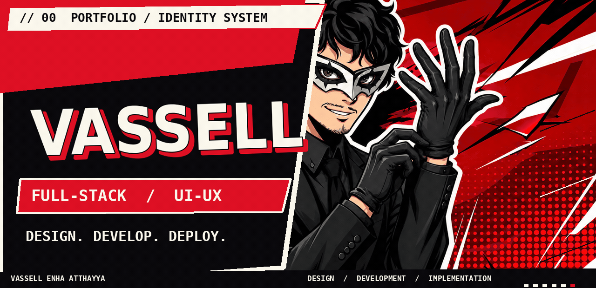
01 / AboutPERSONNEL RECORD // PROFESSIONAL IDENTITY
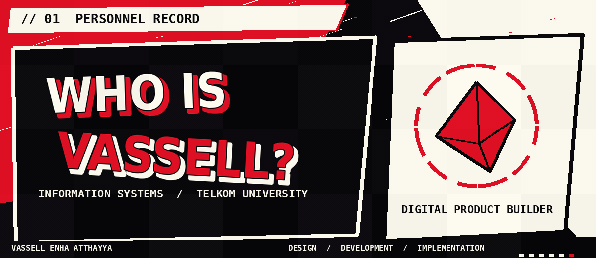
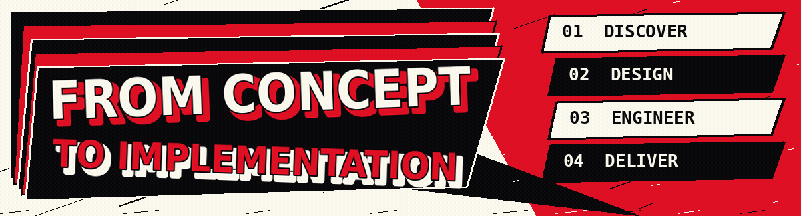
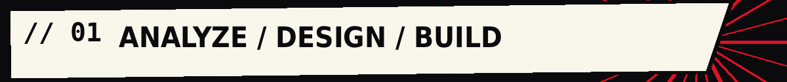
02 / ArsenalORIGINAL TECHNICAL INTERFACE
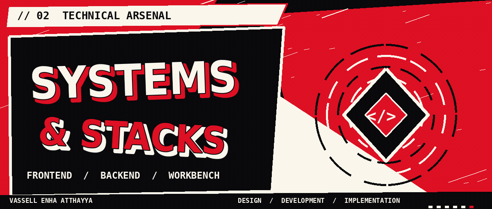
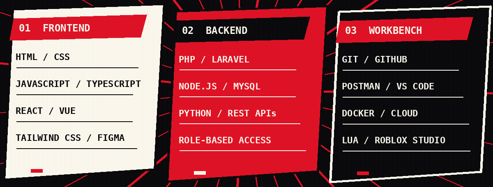
03 / ProjectsFEATURED PERSONAL PORTFOLIO + SELECTED REPOSITORIES
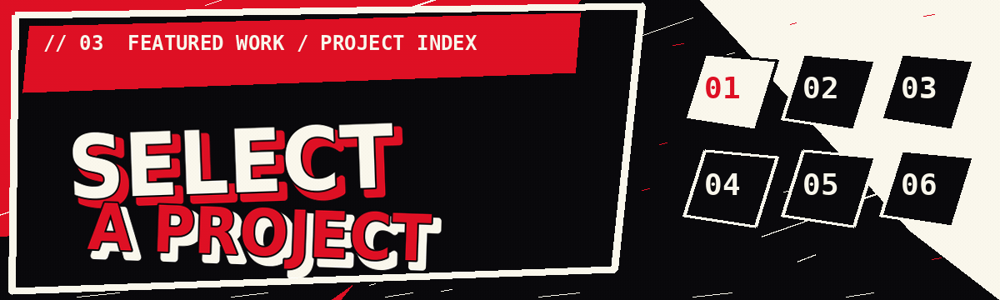
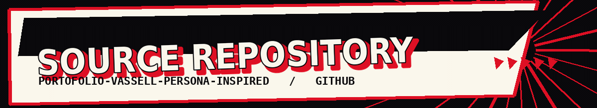
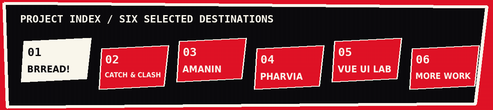
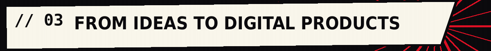
04 / ActivityDECORATIVE MOTION ART + LIVE GITHUB LINK
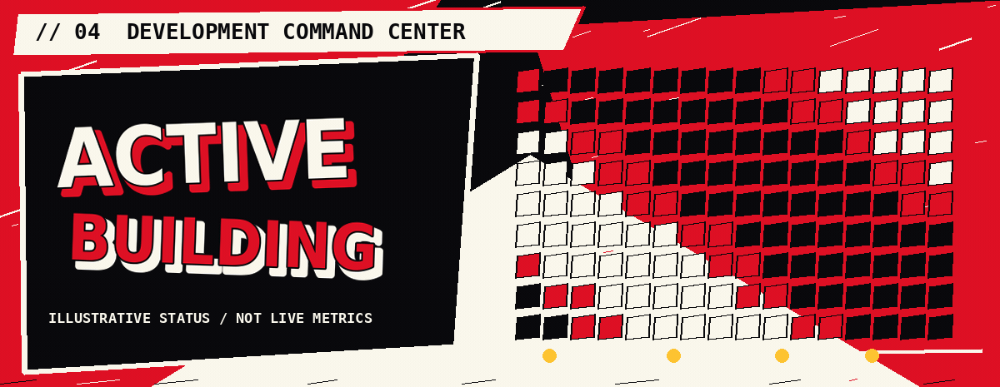
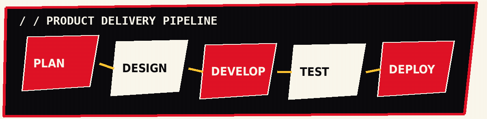
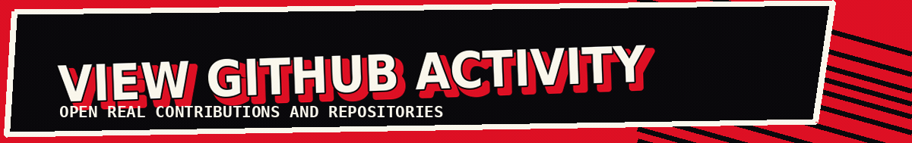
05 / ContactPERSONAL LINKS + COLLABORATION
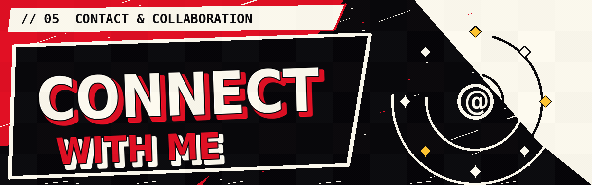
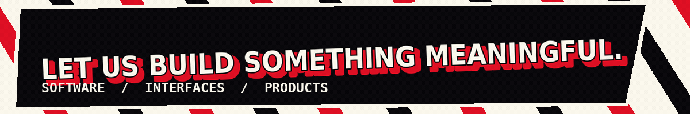
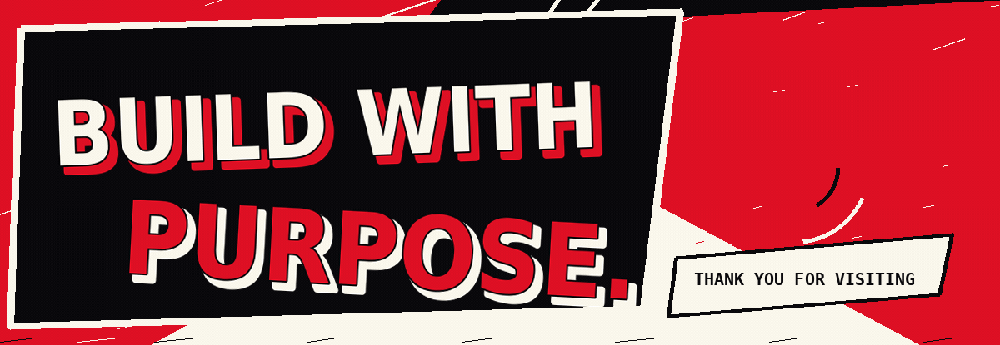
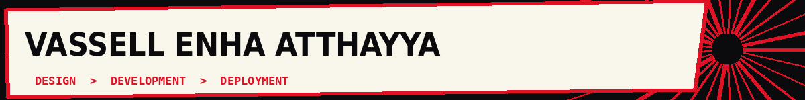